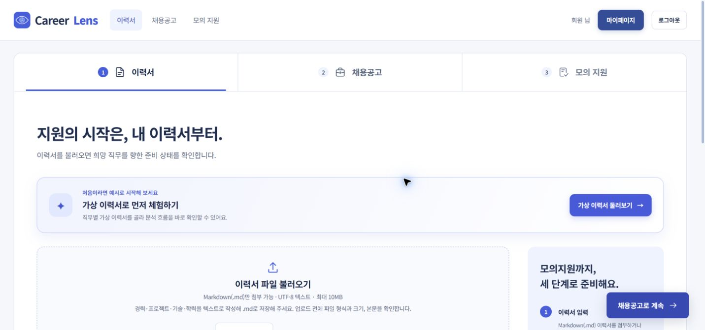
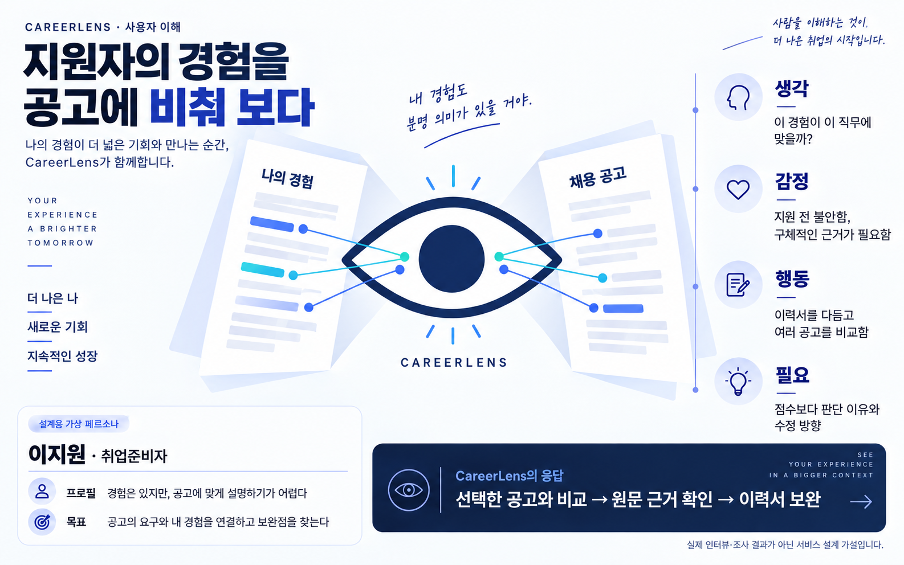
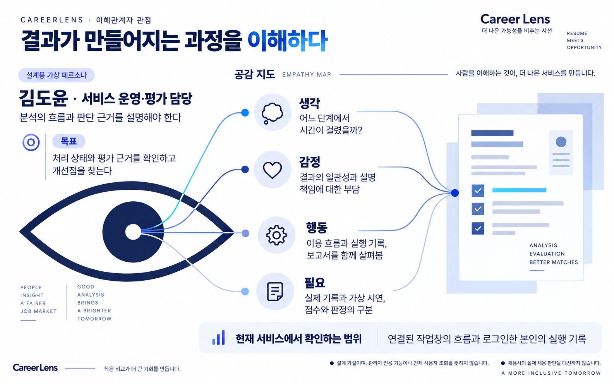
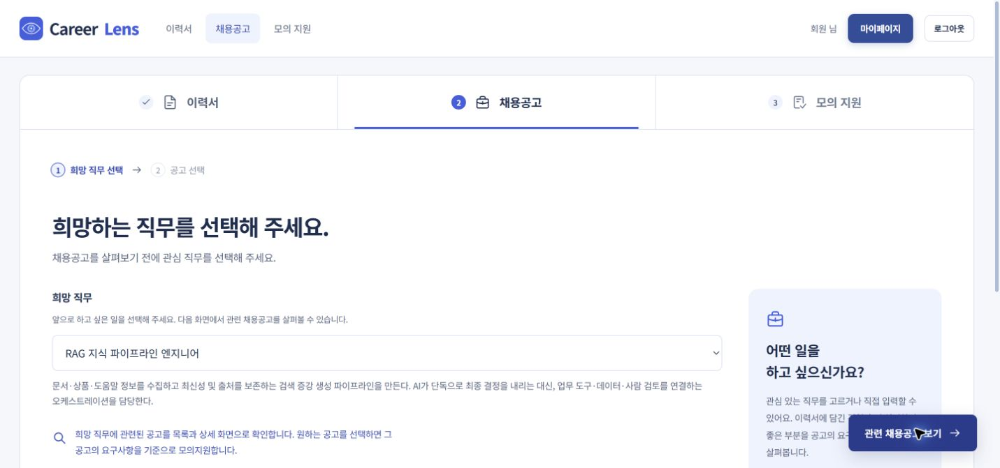
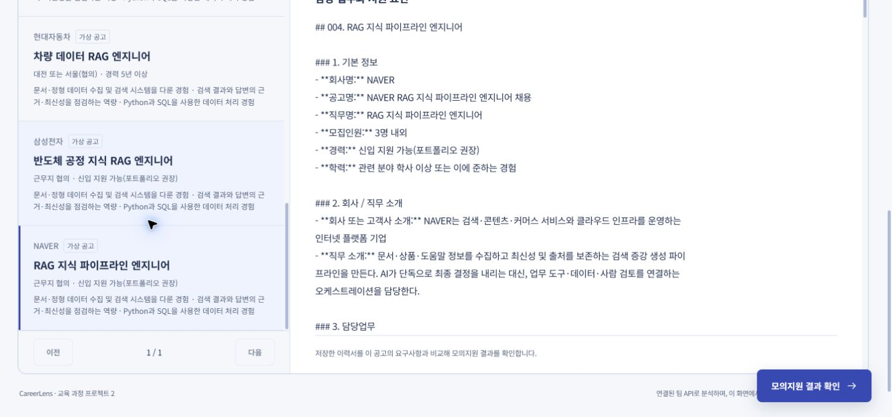
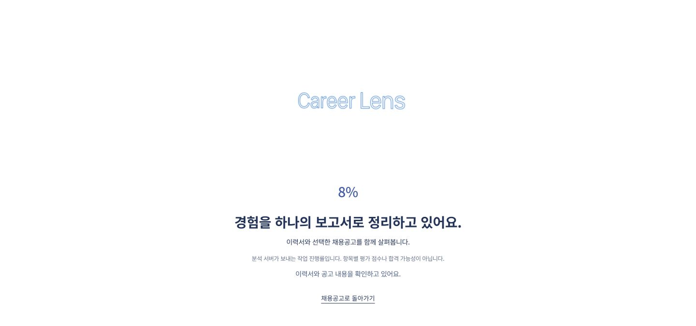
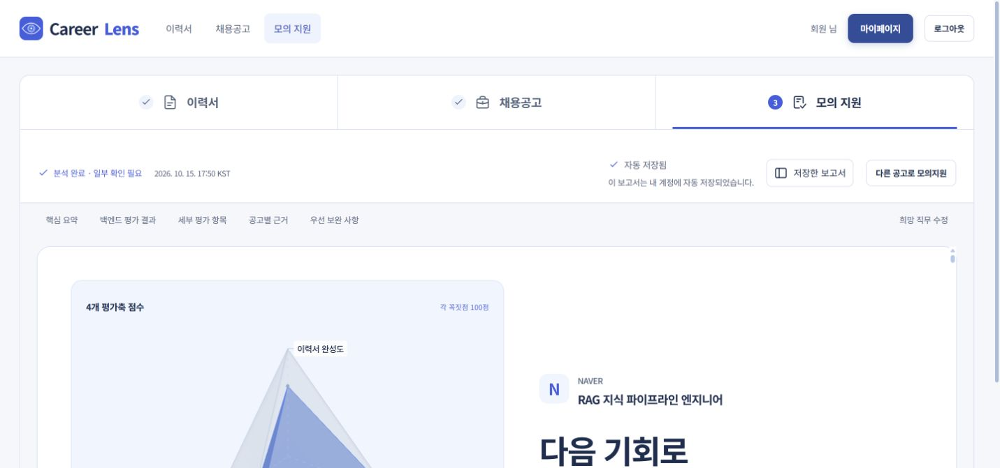
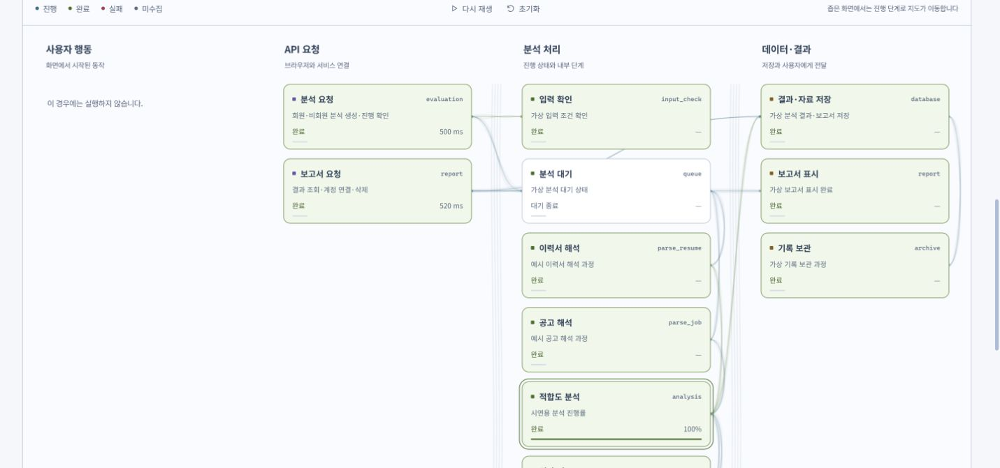
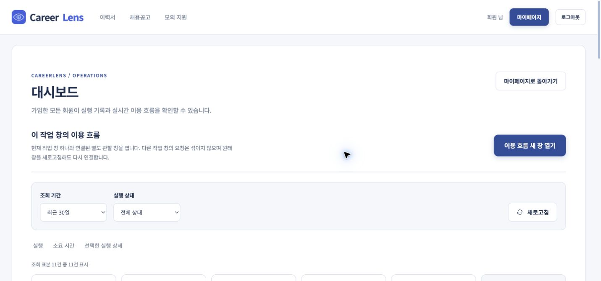
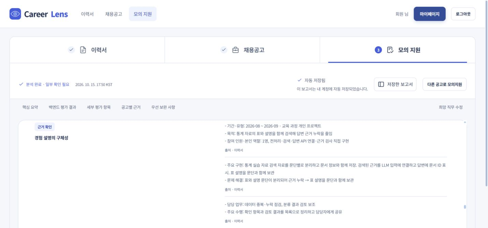

01
비교할 경험을 준비한다
로그인 후 이력서 본문을 준비합니다. 공개 가상 이력서로도 분석 과정을 체험할 수 있습니다.

실제 팀 서비스 화면 · 이미지를 누르면 원본 크기로 볼 수 있습니다.지원자는 경험과 공고를 연결하고, 운영·평가 담당자는 결과가 만들어진 과정을 살펴봅니다. CareerLens를 두 관점으로 읽는 사용자 여정입니다.
두 가상 페르소나의 생각·감정·행동·필요를 바탕으로 사용자 흐름을 정리했습니다.
두 페르소나와 공감지도는 서비스 이해를 위한 설계 가설입니다. 실제 사용자 인터뷰나 정량 조사 결과가 아닙니다.


이력서를 준비한 뒤 공고 하나를 선택하고, 평가 이유를 읽어 보완할 내용을 찾습니다.
로그인 후 이력서 본문을 준비합니다. 공개 가상 이력서로도 분석 과정을 체험할 수 있습니다.

실제 팀 서비스 화면 · 이미지를 누르면 원본 크기로 볼 수 있습니다.관심 있는 직무를 선택해 어떤 분야의 공고를 살펴볼지 정합니다. 선택한 이력서는 다음 단계로 이어집니다.

실제 팀 서비스 화면 · 이미지를 누르면 원본 크기로 볼 수 있습니다.희망 직무와 공고의 업무·지원 요건을 살펴보고, 이력서와 비교할 모의공고를 선택합니다.

실제 팀 서비스 화면 · 이미지를 누르면 원본 크기로 볼 수 있습니다.분석을 요청하면 처리 단계를 확인하며 기다립니다. 표시되는 진행률은 평가 점수와 다릅니다.

실제 팀 서비스 화면 · 이미지를 누르면 원본 크기로 볼 수 있습니다.네 평가 영역의 점수와 판정, 원문 근거와 보완 방향을 함께 읽습니다. 점수는 합격 확률이나 지원자 순위가 아닙니다.

실제 팀 서비스 화면 · 이미지를 누르면 원본 크기로 볼 수 있습니다.처리 흐름과 저장된 기록을 함께 읽고, 결과를 설명할 수 있는 단서를 찾습니다.
대시보드의 ‘이 작업창 이용 흐름 새 창 열기’에서 연결한 창은 현재 작업의 흐름을 관찰합니다. 대시보드는 로그인한 본인의 실행 기록을 확인합니다. 관리자 전용 전체 사용자 조회나 채용사의 HR 판단 기능을 뜻하지 않습니다.
작업창에서 이용 흐름 새 창을 열어 ‘원래 작업 창 연결됨’을 확인하면 실시간 관찰이 가능합니다. 아래 사진은 별도의 가상 이벤트 시연이며 실시간 분석 화면은 아닙니다.

가상 이벤트 시연 화면 · 이미지를 누르면 원본 크기로 볼 수 있습니다.대시보드를 별도 창으로 열고 본인 실행의 상태와 단계·시간 등 기록된 정보를 확인합니다. 수집되지 않은 값은 추정하지 않습니다.

실제 팀 서비스 화면 · 이미지를 누르면 원본 크기로 볼 수 있습니다.검토 상태와 자격 판정, 숫자 점수를 나눠 읽고 결과의 이유와 원문 근거를 살펴봅니다.

실제 팀 서비스 화면 · 이미지를 누르면 원본 크기로 볼 수 있습니다.실제 분석 화면 기록과 이용 흐름의 내장 시연을 구분해 짧은 영상으로 담았습니다.
실시간 관찰은 작업창의 ‘이 작업창 이용 흐름 새 창 열기’에서 연결하고 ‘원래 작업 창 연결됨’을 확인해 사용합니다. 아래 보조 시연의 가상 로그·시간·진행률은 실제 서버 기록이 아닙니다. 두 영상은 같은 실행에 연결된 기록이 아닙니다. 실제 분석 중 실시간 이용 흐름까지 함께 움직이는 영상은 이번 자료에 포함하지 못했습니다.